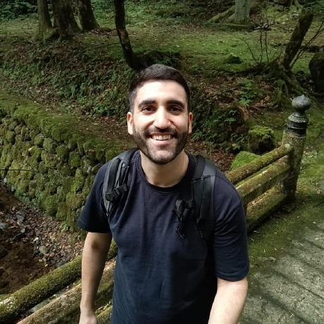

Hola, soy
Daniel Montes Cruz
Ingeniero Electromecánico & Full Stack Developer
Madrid, España

Perfil Profesional
Ingeniero con más de 10 años de trayectoria profesional liderando operaciones, optimización de procesos y estrategias de negocio en entornos multinacionales y tecnológicos. Especializado en la implementación de metodologías ágiles (Scrum Master), dirección de proyectos y reingeniería de flujos basados en datos.
Actualmente enfocado en la ingeniería de software como Desarrollador Full Stack, fusionando una sólida disciplina técnica con el dominio de lenguajes de programación (Python, SQL) y arquitecturas modernas para construir soluciones de software eficientes, estructuradas y orientadas a la optimización del negocio.
Metodologías Ágiles
Scrum Master y reingeniería de flujos basados en datos.
Análisis de Datos
Dominio de arquitecturas y datos para optimización del negocio.
Desarrollo de Software
Soluciones eficientes y estructuradas con tecnologías modernas.
Conocimientos Técnicos
Lenguajes & Backend
Desarrollo Web & Frontend
Tecnologías en Desarrollo Activo
Metodologías, Agilidad & Gestión
Sistemas, Datos & Herramientas
Ingeniería & Diseño Industrial
Idiomas
Experiencia Profesional
Coca-Cola Europacific Partners
4 años y 6 meses en total
Trade Marketing Channel Executive
Feb 2024 - Dic 2025- Responsable de la ejecución estratégica de planes comerciales en el Canal de Alimentación Moderna, desarrollando proyectos transversales de alto impacto para las marcas de cartera premium: Coca-Cola, Aquarius y Powerade.
Home Market Customer Executive (Gestión de Grandes Cuentas)
Ago 2024 - Feb 2025- Asumí de forma integral el desarrollo de los planes comerciales para clientes nacionales estratégicos de Alimentación Moderna, liderando la relación operativa con cuentas clave como Lidl, Aldi, DIA, Gadisa, Consum y Froiz.
Trade Marketing Channel Executive – Área Centro y Sur
Jun 2023 - Ago 2024- Dirección operativa de planes comerciales y de activación personalizados para clientes regionales del Canal de Alimentación Moderna.
Customer & Channel Activation - Agile Resource Team
May 2022 - Jun 2023- Lideré la transición operativa de la coordinación nacional de exhibidores de Cuartos de pallet desde el área de Supply Chain hacia el departamento Comercial, asignación otorgada tras un desempeño sobresaliente previo.
- Introduje metodologías de trabajo ágiles (Agile) para la mejora y reingeniería de procesos internos, definiendo y controlando los nuevos cuadros de mando de KPIs.
- Optimicé el trabajo en equipo, la fluidez del flujo de información y la comunicación técnica en toda la cadena logística.
- Formé y capacité activamente a mis compañeros en el uso de los nuevos flujos ágiles y herramientas analíticas digitales.
Commercialization & Innovation Project Manager
Jul 2021 - May 2022- Dirección técnica y coordinación a nivel nacional de la operativa logística de exhibidores dentro de Supply Chain.
- Gestión de proyectos de actualización de artes finales para embalajes primarios y secundarios, logrando una rápida adaptación ante directrices estacionales de marca o cambios legislativos.
- Control operativo para la validación y homologación de nuevos materiales y envases en líneas de producción automatizadas.
Operation Manager
ActivH₂O
- Coordinación de equipos de instaladores técnicos en campo a nivel nacional.
- Liderazgo en la oficina técnica enfocada en el diseño analítico de proyectos integrales de tratamiento de aguas.
- Dirección y supervisión del desarrollo técnico, prototipado e ingeniería de nuevos equipos industriales mediante entornos CAD/CAE.
- Gestión de compras operativas, optimización de inventarios y captación de proveedores y partners internacionales.
Scrum Master
Volvo Group España
- Responsable de impulsar y coordinar la implementación práctica de metodologías ágiles (Agile/Scrum) y sus herramientas de gestión en los departamentos de la oficina central y talleres de la marca.
- Conceptualización, desarrollo y monitorización sistemática de indicadores de rendimiento (KPI) para el control diario de flujos de trabajo.
- Gestión proactiva del bloqueo de tareas (impedimentos), escalada de incidencias operativas y auditoría de planes de mejora continuos.
Technical Service Manager
Refrival - Heineken España Group
- Coordinación de brigadas de soporte técnico en campo, auditoría de calidad de infraestructuras y planificación de instalaciones de alta complejidad de fluidos.
- Soporte analítico de ingeniería de preventa técnica para la consecución de acuerdos del departamento Comercial.
Medical Engineer
Dräger
- Ingeniería de campo centrada en el mantenimiento preventivo, predictivo y correctivo de equipamiento electromédico crítico en entornos hospitalarios (sistemas de ventilación asistida, estaciones de anestesia y vaporizadores de gases quirúrgicos) aplicando metodologías Lean Six Sigma.
- Gestión documental técnica e ingeniería bajo rigurosas normativas internacionales de control sanitario.
- Resolución de incidencias técnicas en entornos hospitalarios y de atención al cliente de alta presión.
Formación Académica
Máster en Desarrollo Full Stack
Conquer Blocks - Instituto Europeo de Alta Dirección
06/2025 - 12/2026Cursos de Especialización en Desarrollo de Software
MoureDev Pro
01/2026 - 12/2026Máster en Administración y Dirección de Empresas - MBA
thePower
09/2024 - 06/2025Programa Data Science
thePower
09/2024 - 06/2025Grado en Ingeniería Electromecánica (Especialidad Mecánica)
Universidad Pontificia Comillas - ICAI
2010 - 2015Licencias y Certificaciones Técnicas
Desarrollo Personal & Ingeniería Aplicada
Diseño, Prototipado y Fabricación Industrial
Lideré de manera autónoma el modelado CAD mediante SolidWorks y prototipado rápido con impresión 3D de nuevos productos comerciales, coordinando directamente con proveedores de manufactura el escalado industrial del producto final.
07/2020 - 01/2023Proyecto de Impresión 3D Biomédica
Colaboración técnica con la Universidad Pontificia Comillas (ICAI) en el diseño de entornos de manufactura aditiva para la creación de férulas y prótesis anatómicas a medida.
09/2017 - 06/2019Voluntariado Social
Miembro y colaborador operativo en labores de protección y rescate animal en la asociación Hoope (Torrejón de Ardoz, Madrid).
2015 - 2019¿Hablamos?
Estoy siempre abierto a discutir nuevos proyectos, oportunidades creativas y visiones innovadoras.